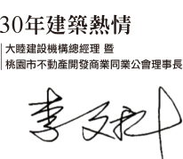

在群雄並起的建築界，有人講究速度、有人推行廣度、有人則是著重能見度。
創立於桃園大睦建設機構‧築生團隊，以專業思維全心全意的為住戶建構幸福的高度。
經營者總是秉懷著「為山九仞、懸命一生」的精神，時時引領同仁挑戰一場永恆的「幸福工程」。
為此，從選地時仔細分析地段發展，規劃時勤力追求設計創新、到執行時嚴謹掌握營造流程…

建築開發商的使命感
馭繁為簡的當代精品
國際同步的休閒行館
綠色療癒的庭園景觀